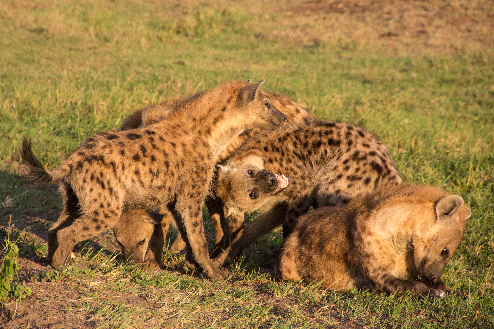
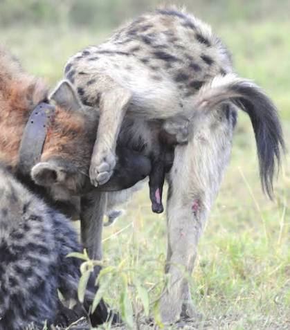
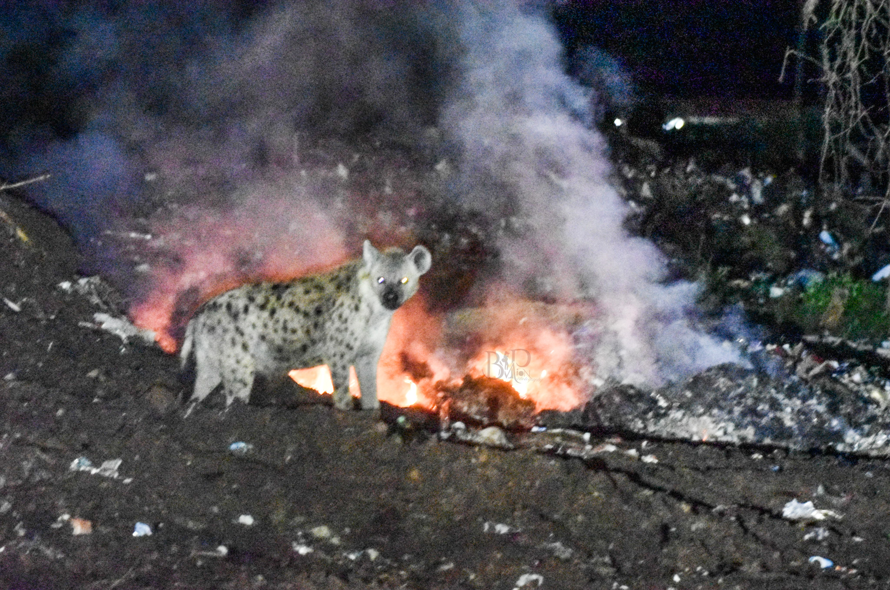
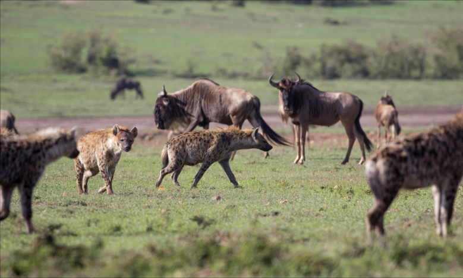

The spotted hyena is not just a charismatic African predator, it is a model organism for some of biology’s most exciting questions about social evolution, how epigenetics and physiology shape the development of behavior, and how animals adapt to a changing world.
Social Complexity
Spotted hyenas live in clans of up to 130 individuals, among the largest and most complex societies of any non-primate mammal. These clans have stable, linear dominance hierarchies, matrilineal rank inheritance, fission-fusion dynamics, and long-term social bonds. Navigating a society this intricate is cognitively demanding, and hyenas’ social intelligence appears to rival that of some primates.

Reversed Sex Roles
In most mammals, males are larger and dominant over females. In spotted hyenas, the reverse is true: females are larger, heavier, and in most cases, dominant over males.
Females also show remarkable sexual mimicry, developing pseudo-male genitalia: an elongated clitoris, or “phallus,” through which they urinate, mate, and give birth. Birthing through the phallus is as difficult as it sounds, and many females lose their first litter during delivery. The resemblance is so convincing that people once believed hyenas were hermaphrodites, and even today tourists frequently mistake the large, dominant females for males without realizing they are seeing male sexual mimicry. Why such extreme mimicry evolved is still scientifically debated.

Long-Term Data
Spotted hyenas are long-lived (12+ years in the wild), have small litter sizes, and invest heavily in offspring. The MHP’s 35-year dataset of individual life histories is one of the only tools in existence that can link conditions at birth to outcomes in old age in a wild large mammal. A longitudinal record of this depth is incredibly valuable and effectively irreplaceable.

Urbanization as a Natural Experiment
As human settlements expand around the Maasai Mara, hyena populations now exist across a gradient from wild to peri-urban environments. This gradient allows researchers to study rapid behavioral and cognitive adaptation in real time; asking whether traits that help animals survive in urban environments parallel traits that helped ancestors survive other novel conditions. No lab experiment could replicate this scale or ecological realism.

Conservation Relevance
Understanding spotted hyenas is practically important. As keystone predators and scavengers, hyenas deliver essential ecosystem services: they clean up carcasses and waste, help keep ecosystems healthy, and, like other top predators, play a critical role in maintaining balanced systems. Their immune and digestive systems are remarkably powerful, letting them consume rotting carcasses and meat carrying pathogens like anthrax and botulism that would sicken most other animals.
